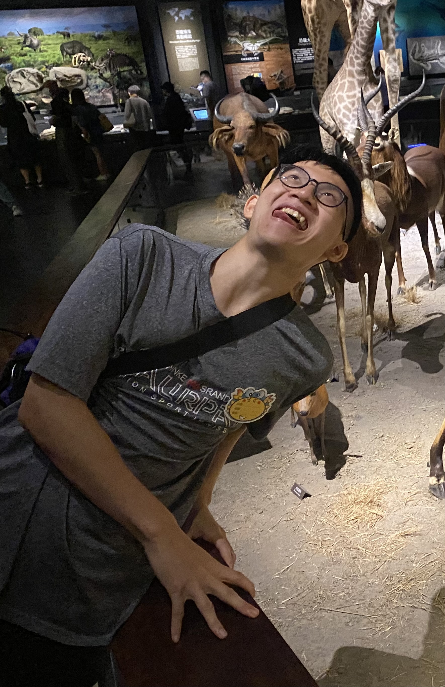
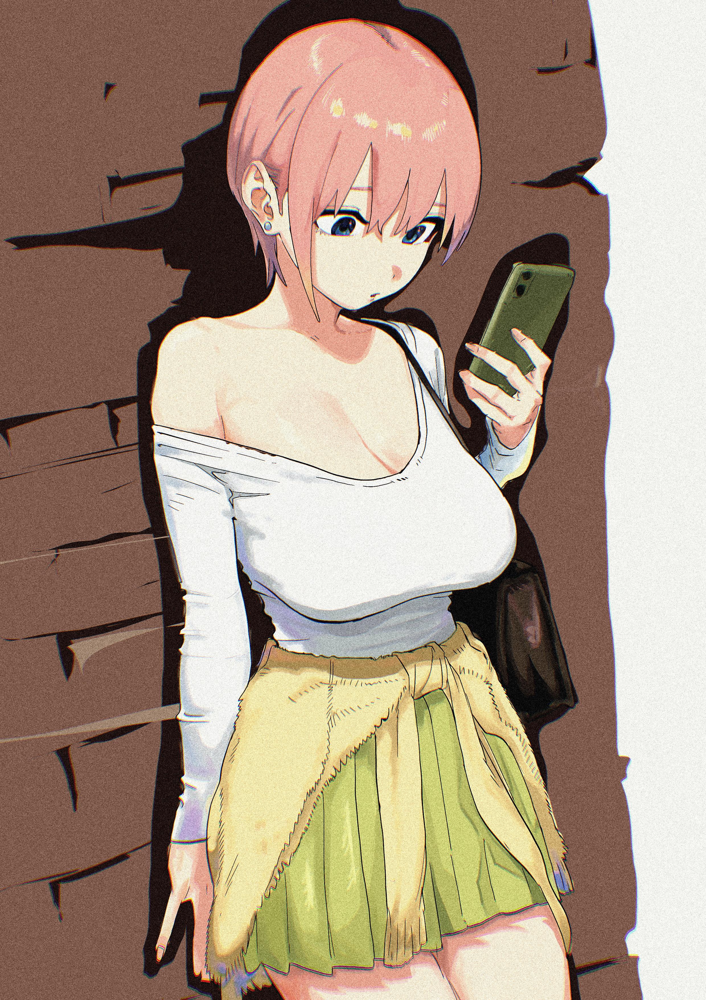
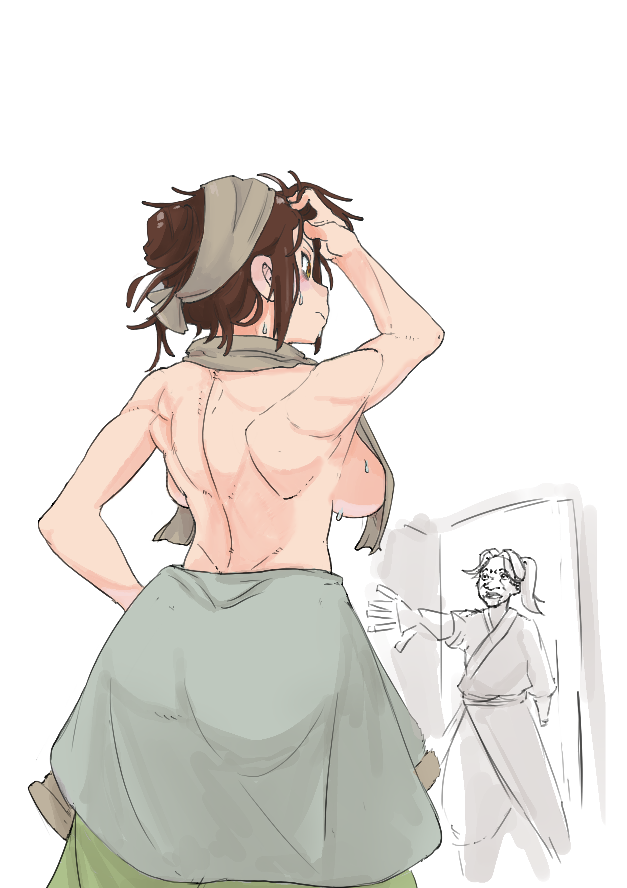
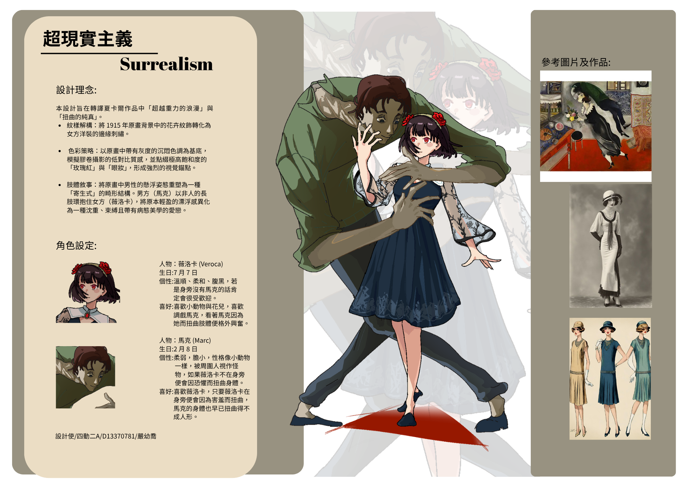

Portfolio · 2026
YEN YU-CHIAO
動畫就是把腦海中的世界畫出來
2D Animator · Multimedia Animation · Blender · Maya
進入作品世界
我是一名就讀多媒體動畫系的學生，主要方向是 2D 動畫的繪製與分鏡規劃，同時也接觸 3D 場景搭建，試著從不同維度去理解空間感與畫面構成。
動畫對我來說不只是技術，而是一種語言——用畫面說出那些難以言語的故事。 目前正努力挑戰更多能力的邊界，也在學習日語， 希望未來能更接近日本動畫產業的製作模式。
開始接觸數位繪圖，使用 Procreate 進行插畫練習，奠定手感與色彩概念
進入多媒體動畫系，學習 Adobe After Effects、Tahoma 2D，開始製作2D逐格動畫
擴展至 OpenToonz、Procreate Dreams，並開始學習 Blender 3D 場景建模，同步學習日語中
持續深化 2D 動畫技術，同時鑽研人體解剖學與 Maya 進階應用

工具：Clip Studio Paint · Procreate
上色練習。

工具：Clip Studio Paint
活俠傳 二次創作。

工具：Clip Studio Paint
以超現實主義所創作的角色。
高中時期的動畫習作，記錄最初接觸動態影像的摸索過程。
工具：Clip Studio Paint
2D動畫作業。
工具：tv paint
2D動畫作業。
大學期間的動畫作品，可看出技術與表達力的明顯提升。
工具：Tahoma 2D · Adobe After Effects
自主練習一。
工具：OpenToonz · Clip Studio Paint
自主練習二。
工具：Procreate Dreams · After Effects
手繪動畫作業。
Clip Studio Paint·After Effects
。
工具：請填入使用工具
。
紮實的素描能力是動畫師的基礎。我的目標是系統性地學習人體解剖學， 理解肌肉結構、骨骼比例與動態規律，讓角色的動作更加自然可信。
日本是全球最重要的動畫產業中心之一。取得 N4 不只是語言目標， 更是為將來接觸日本業界、閱讀原文資料做好準備。
使用 Line of Action、Sketchdaily 練習動態人體速寫，培養快速捕捉姿態的能力
搭配《Drawing on the Right Side of the Brain》及解剖學參考書，每週完成一個身體部位的深度研究
使用 Anki 背單字（每日 20 個新詞），配合 JLPT N4 文法書，週末完成一套模擬題組
每次至少完成一個 12 格短片段，從 Walk Cycle 開始，逐步挑戰更複雜的動作與情緒表達